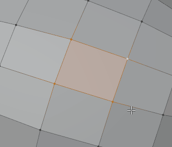

Extras
Smaller shortcuts and UI additions that remove friction from everyday work.
Fast Merge & Connect
1 · Alt 1 · Shift 1Edit ModePreference: Merge/Connect
| Shortcut | Action |
|---|---|
| 1 | Fast Merge. With one vertex selected, merges it to the vertex nearest the mouse. With more selected, merges at the active vertex (or the nearest one, depending on Options). Hold to repeat. |
| Alt 1 | Merge at center |
| Shift 1 | Connect. Vertex mode with 2+ vertices: join them. Vertex mode with 0–1: knife tool. Edge or face mode: connect (works across several objects in edge mode). |
Settings
- Options: merge to the nearest vertex when there is no active vertex (default), always merge to the nearest, or the legacy behavior.
- Limit: a safety net against merging a whole mesh by accident. Ask to confirm when there is no active vertex (default), don't merge when everything is selected, cap by vertex count, or no limit.


Modifier Key
Properties EditorPreference: Modifier Key
Keyboard control of the modifier stack. Hover the Modifier tab in the Properties Editor and press:
| Shortcut | Action |
|---|---|
| Q / Shift Q | Move modifier up / to top |
| E / Shift E | Move modifier down / to bottom |
| W / Shift W | Select previous / first modifier |
| S / Shift S | Select next / last modifier |
| 1 | Toggle render |
| 2 · Alt 2 | Toggle viewport · on all selected objects |
| 3 · 4 | Toggle edit mode · cage |
| A | Apply modifier |
| D | Duplicate modifier |
| X · Alt X | Delete modifier · delete modifiers with the same name on all selected objects |
| Tab | Switch between the Modifier and Data tabs |
| M | Go to the Material tab |
Attribute Operations
Mesh Data › AttributesPreference: Attributes Operations
Adds Assign, Remove and Select buttons to the Attributes panel in Edit Mode, so attributes work like vertex groups. Quick buttons create new vertex, edge and face groups. Supports Boolean, Float and Color attributes.

Outliner Options
Outliner › FilterPreference: Outliner Options · Blender 4.2–5.1 only
Extra selection options in the Outliner filter popover:
- Auto Focus: scroll the Outliner to objects you select in the viewport. Can be slow with very many objects.
- Collapse Unselected Collections: keep only the collections with selected objects open.
- Select Children: clicking an object in the Outliner selects its children too.
Legacy Shortcuts
Preference: Legacy Shortcuts
Brings back useful shortcuts from Blender 2.79.
| Shortcut | Where | Action |
|---|---|---|
| Alt P | Edit Mode | Poke faces |
| < / Shift < | Edit Mode, UV Editor | Grow / shrink selection |
| Ctrl A | UV Editor | Average island scale |
| Ctrl P | UV Editor | Pack islands |
| Ctrl C / Ctrl V | UV Editor | Copy / paste UVs |
Collection Number Keys Blender 5.0+
An extra setting that restores the Object Mode number keys for collections: 1–0 show only collection 1–10, Shift adds to what is visible, and Alt targets collections 11–20.